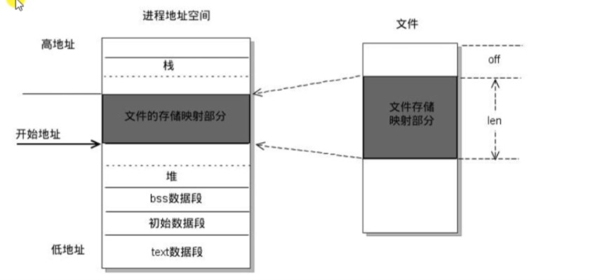
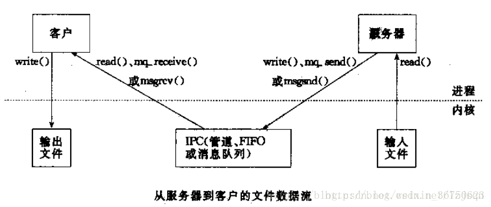
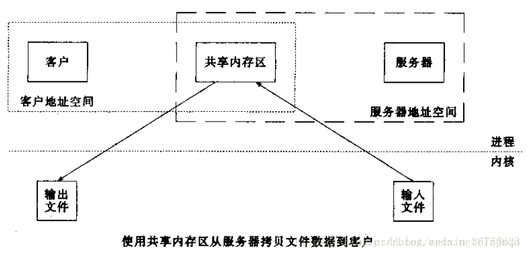

datetime:2023/01/09 11:40
author:nzb
进程间通信
5、共享内存
共享内存有两种方式，即 shm（shared memory） 和 内存映射(mmap) 方式。前者直接共享物理内存，后者通过一个中间文件间接共享内存。
5.1、内存映射(mmap)
5.1.1、内存映射(mmap)是什么
内存映射(Memory-mapped I/O)是一种内存映射文件的方法，即将一个文件或者其它对象映射到进程的地址空间，实现文件磁盘地址和进程虚拟地址空间中一段虚拟地址的一一对映关系。
实现这样的映射关系后，进程就可以采用指针的方式读写操作这一段内存，而系统会自动回写脏页面到对应的文件磁盘上， 即完成了对文件的操作而不必再调用read,write
等系统调用函数。相反，内核空间对这段区域的修改也直接反映用户空间，从而可以实现不同进程间的文件共享。

5.1.2、内存映射(mmap)和常规文件操作的区别
常规文件操作需要从磁盘到页缓存(处于内核空间，不能被用户进程直接寻址)，再到用户主存的两次数据拷贝。而mmap操控文件， 只需要从磁盘到用户主存的一次数据拷贝过程（创建新的虚拟内存区域，建议文件磁盘地址和虚拟内存区域映射，一次拷贝）。
5.1.3、内存映射(mmap)的优点
mmap系统调用使得进程之间通过映射同一个普通文件实现共享内存。普通文件被映射到进程地址空间后，进程可以像访问普通内存一样对文件进行访问， 不必再调用read()，write()等操作。mmap并不分配空间,
只是将文件映射到调用进程的地址空间里, 然后你就可以用memcpy等操作写文件, 而不用write()了.写完后用msync()同步一下, 你所写的内容就保存到文件里了. 不过这种方式没办法增加文件的长度,
因为要映射的长度在调用mmap()的时候就决定了.
5.1.4、使用内存映射实现没有关系的进程间的通信案例
/*
#include <sys/mman.h>
void *mmap(void *addr, size_t length, int prot, int flags,int fd, off_t offset);
- 功能：将一个文件或者设备的数据映射到内存中
- 参数：
- void *addr: NULL, 由内核指定
- length : 要映射的数据的长度，这个值不能为0。建议使用文件的长度。
获取文件的长度：stat lseek
- prot : 对申请的内存映射区的操作权限
-PROT_EXEC ：可执行的权限
-PROT_READ ：读权限
-PROT_WRITE ：写权限
-PROT_NONE ：没有权限
要操作映射内存，必须要有读的权限。
PROT_READ、PROT_READ|PROT_WRITE
- flags :
- MAP_SHARED : 映射区的数据会自动和磁盘文件进行同步，进程间通信，必须要设置这个选项
- MAP_PRIVATE ：不同步，内存映射区的数据改变了，对原来的文件不会修改，会重新创建一个新的文件。（copy on write）
- fd: 需要映射的那个文件的文件描述符
- 通过open得到，open的是一个磁盘文件
- 注意：文件的大小不能为0，open指定的权限不能和prot参数有冲突。
prot: PROT_READ open:只读/读写
prot: PROT_READ | PROT_WRITE open:读写
- offset：偏移量，一般不用。必须指定的是4k的整数倍，0表示不偏移。
- 返回值：返回创建的内存的首地址
失败返回MAP_FAILED，(void *) -1
int munmap(void *addr, size_t length);
- 功能：释放内存映射
- 参数：
- addr : 要释放的内存的首地址
- length : 要释放的内存的大小，要和mmap函数中的length参数的值一样。
*/
/*
使用内存映射实现进程间通信：
1.有关系的进程（父子进程）
- 还没有子进程的时候
- 通过唯一的父进程，先创建内存映射区
- 有了内存映射区以后，创建子进程
- 父子进程共享创建的内存映射区
2.没有关系的进程间通信
- 准备一个大小不是0的磁盘文件
- 进程1 通过磁盘文件创建内存映射区
- 得到一个操作这块内存的指针
- 进程2 通过磁盘文件创建内存映射区
- 得到一个操作这块内存的指针
- 使用内存映射区通信
注意：内存映射区通信，是非阻塞。
*/
#include <stdio.h>
#include <sys/mman.h>
#include <fcntl.h>
#include <sys/types.h>
#include <unistd.h>
#include <string.h>
#include <stdlib.h>
#include <wait.h>
// 作业:使用内存映射实现没有关系的进程间的通信。
int main() {
// 1.打开一个文件
int fd = open("test.txt", O_RDWR);
int size = lseek(fd, 0, SEEK_END); // 获取文件的大小
// 2.创建内存映射区
void *ptr = mmap(NULL, size, PROT_READ | PROT_WRITE, MAP_SHARED, fd, 0);
if(ptr == MAP_FAILED) {
perror("mmap");
exit(0);
}
// 3.创建子进程
pid_t pid = fork();
if(pid > 0) {
wait(NULL);
// 父进程
char buf[64];
strcpy(buf, (char *)ptr);
printf("read data : %s\n", buf);
}else if(pid == 0){
// 子进程
strcpy((char *)ptr, "nihao a, son!!!");
}
// 关闭内存映射区
munmap(ptr, size);
return 0;
}
5.1.5、思考问题
- 如果对
mmap的返回值(ptr)做++操作(ptr++),munmap是否能够成功?
void * ptr = mmap(...);
ptr++; // 可以对其进行++操作
munmap(ptr, len); // 错误,要保存地址
如果
open时O_RDONLY,mmap时prot参数指定PROT_READ | PROT_WRITE会怎样?答：错误，返回
MAP_FAILED，open()函数中的权限建议和prot参数的权限保持一致。如果文件偏移量为
1000会怎样?答：偏移量必须是4K的整数倍，返回MAP_FAILED
mmap什么情况下会调用失败?
- 第2个参数：length = 0
- 第3个参数：prot 只指定了写权限
- 第3个参数 prot 指定了
PROT_READ | PROT_WRITE，而第5个参数fd通过open函数时指定的O_RDONLY / O_WRONLY
可以
open的时候O_CREAT一个新文件来创建映射区吗?- 可以的，但是创建的文件的大小如果为0的话，肯定不行
- 可以对新的文件进行扩展
lseek()truncate()
- mmap后关闭文件描述符，对mmap映射有没有影响？
- int fd = open("XXX");
- mmap(,,,,fd,0);
- close(fd);
- 映射区还存在，创建映射区的fd被关闭，没有任何影响。
5.1.6、内存映射可以实现：1.进程通信；2.文件拷贝（但是不能拷贝太大的文件，一般也不用于文件拷贝）
// 使用内存映射实现文件拷贝的功能
/*
思路：
1.对原始的文件进行内存映射
2.创建一个新文件（拓展该文件）
3.把新文件的数据映射到内存中
4.通过内存拷贝将第一个文件的内存数据拷贝到新的文件内存中
5.释放资源
*/
#include <stdio.h>
#include <sys/mman.h>
#include <sys/types.h>
#include <sys/stat.h>
#include <fcntl.h>
#include <unistd.h>
#include <string.h>
#include <stdlib.h>
int main() {
// 1.对原始的文件进行内存映射
int fd = open("english.txt", O_RDWR);
if(fd == -1) {
perror("open");
exit(0);
}
// 获取原始文件的大小
int len = lseek(fd, 0, SEEK_END);
// 2.创建一个新文件（拓展该文件）
int fd1 = open("cpy.txt", O_RDWR | O_CREAT, 0664);
if(fd1 == -1) {
perror("open");
exit(0);
}
// 对新创建的文件进行拓展
truncate("cpy.txt", len);
write(fd1, " ", 1);
// 3.分别做内存映射
void * ptr = mmap(NULL, len, PROT_READ | PROT_WRITE, MAP_SHARED, fd, 0);
void * ptr1 = mmap(NULL, len, PROT_READ | PROT_WRITE, MAP_SHARED, fd1, 0);
if(ptr == MAP_FAILED) {
perror("mmap");
exit(0);
}
if(ptr1 == MAP_FAILED) {
perror("mmap");
exit(0);
}
// 内存拷贝
memcpy(ptr1, ptr, len);
// 释放资源
munmap(ptr1, len);
munmap(ptr, len);
close(fd1);
close(fd);
return 0;
}
5.1.7、内存映射的匿名映射：不需要文件实体进程一个内存映射
/*
匿名映射：不需要文件实体进程一个内存映射
*/
#include <stdio.h>
#include <sys/mman.h>
#include <sys/types.h>
#include <sys/stat.h>
#include <fcntl.h>
#include <unistd.h>
#include <string.h>
#include <stdlib.h>
#include <sys/wait.h>
int main() {
// 1.创建匿名内存映射区
int len = 4096;
void * ptr = mmap(NULL, len, PROT_READ | PROT_WRITE, MAP_SHARED | MAP_ANONYMOUS, -1, 0);
if(ptr == MAP_FAILED) {
perror("mmap");
exit(0);
}
// 父子进程间通信
pid_t pid = fork();
if(pid > 0) {
// 父进程
strcpy((char *) ptr, "hello, world");
wait(NULL);
}else if(pid == 0) {
// 子进程
sleep(1);
printf("%s\n", (char *)ptr);
}
// 释放内存映射区
int ret = munmap(ptr, len);
if(ret == -1) {
perror("munmap");
exit(0);
}
return 0;
}
5.1.8、共享存储常用的接口
int shm_open(const char *name, int oflag, mode_t mode); //用于创建或者打开共享内存文件,操作的文件一定是位于tmpfs文件系统里的,存放目录就是/dev/shm
void *mmap(void *addr, size_t length, int port, int flags, int fd, off_t offset); //将打开的文件映射到内存
int munmap(void *addr, size_t length); //取消内存映射
int shm_unlink(const char *name); //删除/dev/shm目录的文件
int ftruncate(int fd, off_t length); //重置文件大小
5.2、共享内存
共享内存区是最快的IPC形式。一旦这样的内存映射到共享它的进程的地址空间，这些进程间数据传递不再涉及到内核，换句话说是进程不再通过执行进入内核的系统调用来传递彼此的数据。
- 用管道或者消息队列传递数据

- 用共享内存传递数据

5.3、内存映射和共享内存的区别
- 1、mmap保存到实际硬盘，实际存储并没有反映到主存上。优点：储存量可以很大（多于主存）；缺点：进程间读取和写入速度要比主存的要慢。—— 每个进程在自己的虚拟地址空间中开辟出一块独立的空间进行映射
- 2、shm保存到物理存储器（主存），实际的储存量直接反映到主存上。优点，进程间访问速度（读写）比磁盘要快；缺点，储存量不能非常大—— 每个进程最终会映射到同一块物理内存
- 3、mmap系统调用并不是完全为了用于共享内存而设计的。它本身提供了不同于一般对普通文件的访问方式，进程可以像读写内存一样对普通文件的操作。 而Posix或系统V的共享内存IPC则纯粹用于共享目的，当然mmap() 实现共享内存也是其主要应用之一。
- 4、共享内存可以直接创建，内存映射需要磁盘文件（匿名映射除外）
- 5、数据安全
- 进程突然退出
- 共享内存还存在
- 内存映射区消失
- 运行进程的电脑死机，宕机了
- 数据存在在共享内存中，没有了
- 内存映射区的数据 ，由于磁盘文件中的数据还在，所以内存映射区的数据还存在。
- 进程突然退出
- 6、生命周期
- 内存映射区：进程退出，内存映射区销毁
- 共享内存：进程退出，共享内存还在，标记删除（所有的关联的进程数为0），或者关机，如果一个进程退出，会自动和共享内存进行取消关联。
5.4、注意
- 1、物理内存和虚拟内存
- 物理内存是指由于安装内存条而获得的临时储存空间。主要作用是在计算机运行时为操作系统和各种程序提供临时储存。
- 虚拟内存是计算机系统内存管理的一种技术。它使得应用程序认为它拥有连续可用的内存（一个连续完整的地址空间），它通常是被分隔成多个物理内存碎片， 还有部分暂时存储在外部磁盘存储器上，在需要时进行数据交换。
- 2、虚拟内存的工作模式 - 当每个进程创建的时候，内核会为进程分配4G的虚拟内存，当进程还没有开始运行时，这只是一个内存布局。实际上并不立即就把虚拟内存对应位置的程序数据和代码 （比如.text
.data段）拷贝到物理内存中，只是建立好虚拟内存和磁盘文件之间的映射就好（叫做存储器映射）。这个时候数据和代码还是在磁盘上的。
当运行到对应的程序时，进程去寻找页表，发现页表中地址没有存放在物理内存上，而是在磁盘上，于是发生缺页异常，于是将磁盘上的数据拷贝到物理内存中。 另外在进程运行过程中，要通过
malloc来动态分配内存时，也只是分配了虚拟内存，即为这块虚拟内存对应的页表项做相应设置，当进程真正访问到此数据时，才引发缺页异常。
5.5、共享内存常用的接口
#include <sys/ipc.h>
#include <sys/shm.h>
int shmget(key_t key, size_t size, int shmflg);- 功能：创建一个新的共享内存段，或者获取一个既有的共享内存段的标识。新创建的内存段中的数据都会被初始化为0
- 参数：
- key : key_t类型是一个整形，通过这个找到或者创建一个共享内存。一般使用16进制表示(方便命令行查看)，非0值
- size: 共享内存的大小
- shmflg: 属性
- 访问权限
- 附加属性：创建/判断共享内存是不是存在
- 创建：
IPC_CREAT - 判断共享内存是否存在：
IPC_EXCL, 需要和IPC_CREAT一起使用：IPC_CREAT | IPC_EXCL | 0664
- 创建：
- 返回值：
- 失败：
-1并设置错误号 - 成功：
>0返回共享内存的引用的ID，后面操作共享内存都是通过这个值。
- 失败：
void *shmat(int shmid, const void *shmaddr, int shmflg);- 功能：和当前的进程进行关联
- 参数：
- shmid : 共享内存的标识（ID）,由shmget返回值获取
- shmaddr: 申请的共享内存的起始地址，指定NULL，内核指定
- shmflg : 对共享内存的操作
- 读 ：
SHM_RDONLY, 必须要有读权限 - 读写：
0
- 读 ：
- 返回值：
- 成功：返回共享内存的首（起始）地址。
- 失败：
(void *) -1
int shmdt(const void *shmaddr);- 功能：解除当前进程和共享内存的关联
- 参数：
- shmaddr：共享内存的首地址
- 返回值：
- 成功：0
- 失败：-1
int shmctl(int shmid, int cmd, struct shmid_ds *buf);- 功能：对共享内存进行操作。删除共享内存，共享内存要删除才会消失，创建共享内存的进行被销毁了对共享内存是没有任何影响。
- 参数：
- shmid: 共享内存的ID
- cmd : 要做的操作
- IPC_STAT : 获取共享内存的当前的状态
- IPC_SET : 设置共享内存的状态
- IPC_RMID: 标记共享内存被销毁
- buf：需要设置或者获取的共享内存的属性信息
- IPC_STAT : buf存储数据
- IPC_SET : buf中需要初始化数据，设置到内核中
- IPC_RMID : 没有用，NULL
key_t ftok(const char *pathname,int proj_id);- 功能：根据指定的路径名，和int值，生成一个共享内存的key
- 参数：
- pathname:指定一个存在的路径：
/home/nowcoder/Linux/a.txt - proj_id: int类型的值，但是这系统调用只会使用其中的1个字节，范围 ： 0-255 一般指定一个字符 'a'
- pathname:指定一个存在的路径：
问题1：操作系统如何知道一块共享内存被多少个进程关联？
- 共享内存维护了一个结构体
struct shmid_ds这个结构体中有一个成员shm_nattch shm_nattach记录了关联的进程个数
- 共享内存维护了一个结构体
问题2：可不可以对共享内存进行多次删除
shmctl- 可以的
- 因为
shmctl标记删除共享内存，不是直接删除 - 什么时候真正删除呢? 当和共享内存关联的进程数为0的时候，就真正被删除
- 当共享内存的key为0的时候，表示共享内存被标记删除了，如果一个进程和共享内存取消关联，那么这个进程就不能继续操作这个共享内存。也不能进行关联。
5.6、代码
write_shm.c
#include <stdio.h>
#include <sys/ipc.h>
#include <sys/shm.h>
#include <string.h>
int main() {
// 1.创建一个共享内存
int shmid = shmget(100, 4096, IPC_CREAT|0664);
printf("shmid : %d\n", shmid);
// 2.和当前进程进行关联
void * ptr = shmat(shmid, NULL, 0);
char * str = "helloworld";
// 3.写数据
memcpy(ptr, str, strlen(str) + 1);
printf("按任意键继续\n");
getchar();
// 4.解除关联
shmdt(ptr);
// 5.删除共享内存
shmctl(shmid, IPC_RMID, NULL);
return 0;
}
read_shm.c
#include <stdio.h>
#include <sys/ipc.h>
#include <sys/shm.h>
#include <string.h>
int main() {
// 1.获取一个共享内存
int shmid = shmget(100, 0, IPC_CREAT);
printf("shmid : %d\n", shmid);
// 2.和当前进程进行关联
void * ptr = shmat(shmid, NULL, 0);
// 3.读数据
printf("%s\n", (char *)ptr);
printf("按任意键继续\n");
getchar();
// 4.解除关联
shmdt(ptr);
// 5.删除共享内存
shmctl(shmid, IPC_RMID, NULL);
return 0;
}
5.7、共享内存相关命令
ipcs -m：查看系统的共享内存，内容有键值(key)，共享内存编号(shmid)，创建者(owner)，权限(perms)，大小(bytes)
root@tegra-ubuntu:/home/quicktron# ipcs -m
------ Shared Memory Segments --------
key shmid owner perms bytes nattch status
0x00000000 65536 quicktron 600 524288 2 dest
0x00000000 163841 quicktron 600 524288 2 dest
0x00000000 622594 quicktron 600 524288 2 dest
0x00000000 524291 quicktron 600 524288 2 dest
0x00000000 458756 quicktron 600 16777216 2 dest
0x00000000 655365 quicktron 600 524288 2 dest
0x00000000 753670 quicktron 600 524288 2 dest
ipcrm -m [shmid]共享内存编号，可以手动删除共享内存